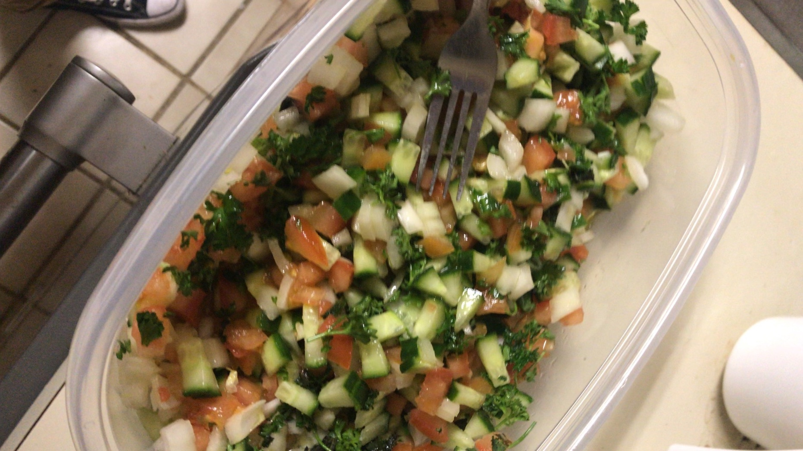

Parker's Salad

Description
Inspired by cucumber and tomato salads made across the Eastern Mediterranean and Middle East,
this salad is sure to rock your world.
Ingredients
- 6 Persian cucumber (small kind you get in 6-packs)
- 5 Tomato on vine
- 1 Yellow onion
- .5-1 Curly parsley bunch
- 1 Lemon
- 5 Tbl Olive oil
If you do not plan to eat a lot, it is recommended to make half the specified amount.
Steps
- Dice or chop cucumber, tomato, onion, and parsley. Combine in bowl.
- Juice lemon. Add lemon juice and olive oil to bowl.
- Mix and serve.